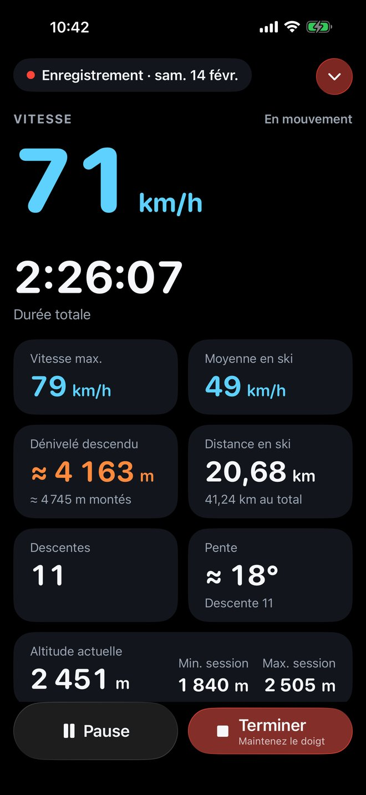
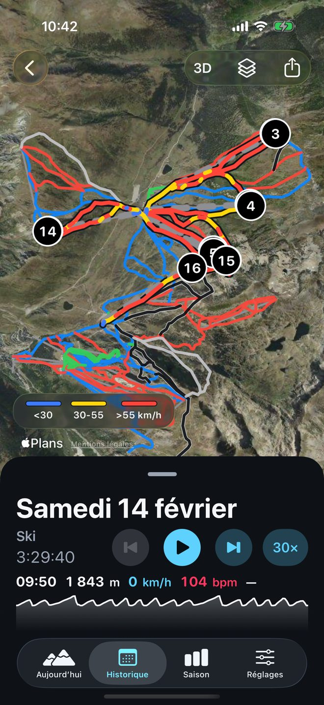
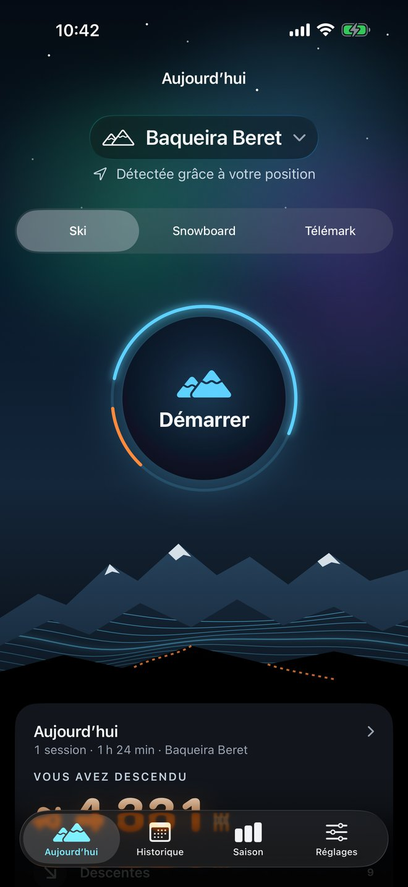
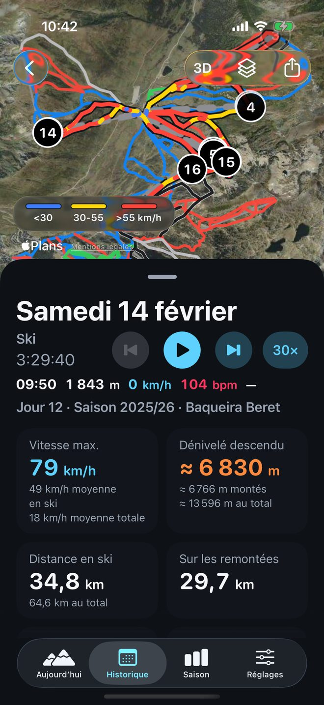
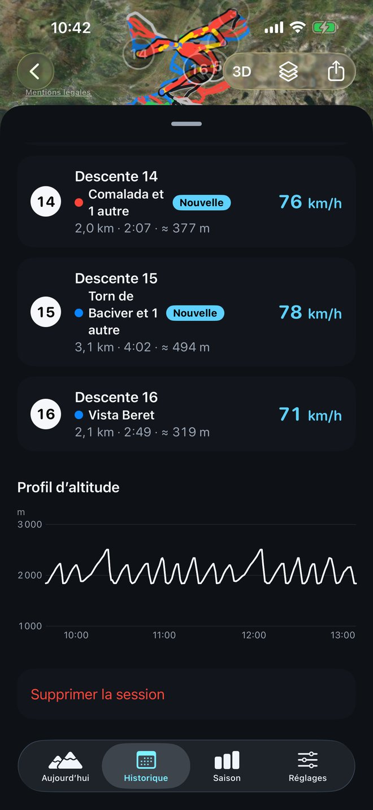
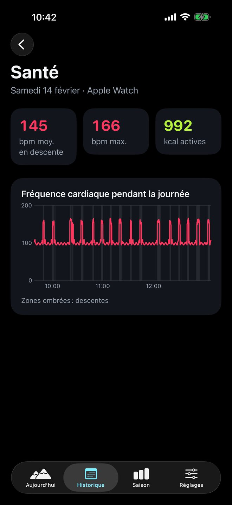
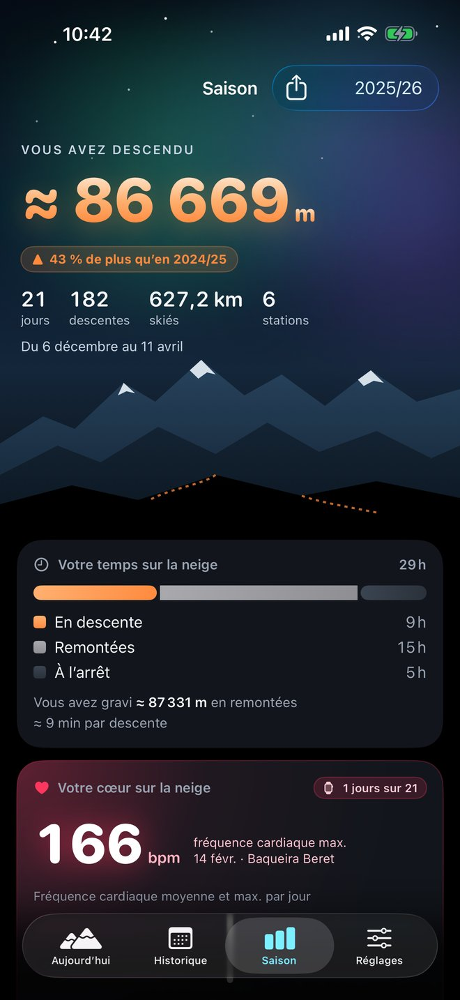
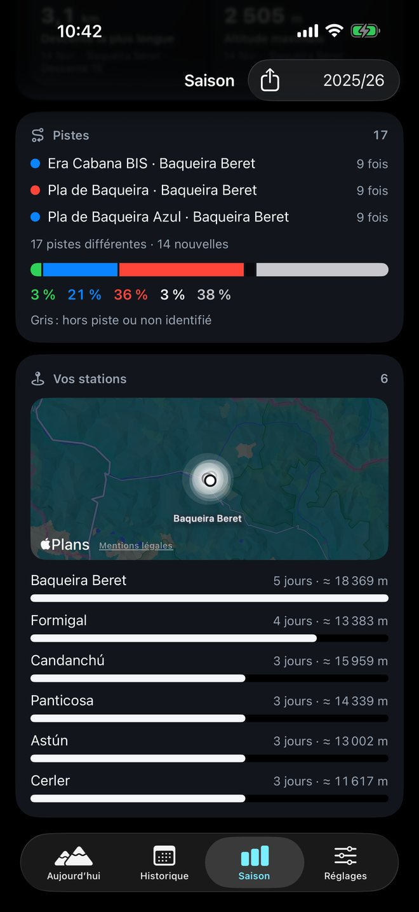
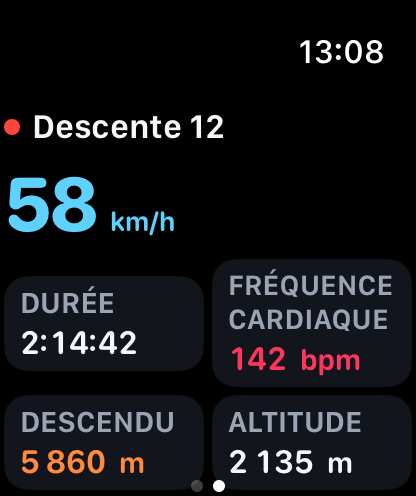
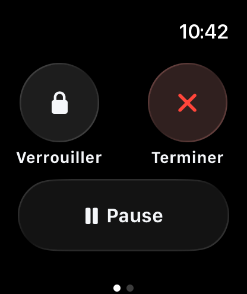

Chaque descente,
enregistrée.
La vitesse, le dénivelé et chaque descente de votre journée de ski, sur iPhone et Apple Watch.

Chaque descente, en temps réel.
Touchez « Démarrer » et oubliez-le. SnowTracker distingue tout seul les descentes et les remontées, et vous montre dans quelle descente vous êtes, à quelle vitesse vous allez, combien de dénivelé vous avez descendu et quelle est la pente. iPhone verrouillé, la session reste sur l’écran verrouillé, avec « Pause » toujours à portée de main.

Toute votre journée sur le plan.
Le parcours de la journée, coloré selon la vitesse, sur Apple Plans, chaque descente numérotée et, dessous, les pistes selon leur difficulté et les remontées. Touchez une descente et le plan vous la montre. Et pour la revivre, rejouez-la jusqu’à 240 fois plus vite.

Les pistes de votre station, déjà dans l’app.
Les pistes selon leur difficulté et les remontées de stations du monde entier sont incluses dans l’app : vous les voyez sous votre parcours, même sans réseau, et dans « Aujourd’hui » l’app reconnaît la station où vous êtes.
- États-Unis431
- Japon385
- Suisse296
- Autriche279
- France245
- Italie213
Données : © contributeurs d’OpenStreetMap, sous licence ODbL. Télécharger les données.
L’app sait où vous skiez.
Quand vous ouvrez l’app, « Aujourd’hui » vous montre dans quelle station vous êtes, ce que vous avez déjà skié aujourd’hui ou, si vous n’avez pas skié aujourd’hui, votre dernier jour : descentes, dénivelé, vitesse maximale et, avec l’Apple Watch, fréquence cardiaque et kcal. Touchez la station pour voir les stations à proximité ou en rechercher une autre. Choisissez ski, snowboard ou télémark, et c’est parti.

Toute la journée d’un coup d’œil.
Vitesse maximale et moyenne, dénivelé, distance sur les pistes et sur les remontées, chaque descente avec sa vitesse et les pistes empruntées, la difficulté de la journée par couleurs et le profil d’altitude. Triez vos descentes par numéro ou par vitesse.


Votre cœur, descente après descente.
Avec l’Apple Watch, chaque journée garde votre fréquence cardiaque moyenne pendant les descentes, votre fréquence cardiaque maximale et vos kcal actives, ainsi qu’un graphique de votre fréquence cardiaque sur toute la journée avec les descentes en évidence.

Chaque mètre de dénivelé compte.
Le dénivelé de toute la saison, comparé à la précédente à la même date, avec vos jours de ski, descentes et kilomètres. Votre temps sur la neige (en descente, sur les remontées et à l’arrêt), vos records en médailles qui ouvrent leur journée, les pistes que vous faites le plus et vos stations sur la carte.


Vous skiez, votre montre aussi.
Démarrez sur l’iPhone et laissez-le dans la poche. Au poignet, vous voyez la descente en cours, votre vitesse, votre fréquence cardiaque et votre dénivelé, et vous mettez en pause ou verrouillez l’écran directement sur la montre. La fréquence cardiaque et les calories de chaque journée restent dans son résumé.


Conçue pour la montagne.
Sur l’écran verrouillé
La session en activité en direct, avec le dénivelé, la durée, les descentes et la vitesse maximale (avec la montre, aussi la fréquence cardiaque et les calories), et « Pause », sans ouvrir l’app.
Aucune session perdue
Si l’app se ferme ou si votre iPhone s’éteint, la session est récupérée à votre retour. Elle vous prévient quand la batterie faiblit et, après 30 minutes sans bouger, vous demande si vous skiez encore.
Enregistrée dans Santé
Chaque journée comme exercice dans l’app Santé, avec le parcours et, avec la montre, votre fréquence cardiaque et vos calories.
Partagez votre journée
Une image de la journée ou de la saison, avec la carte et vos chiffres, ou le parcours en GPX pour d’autres apps.
Ski, snowboard ou télémark
Choisissez votre sport ; les mesures sont les mêmes.
Vos unités
Kilomètres ou miles, mètres ou pieds, selon votre région, et VoiceOver lit chaque valeur avec son unité.
Vos données, sur votre iPhone.
SnowTracker n’a ni comptes ni serveurs. Vos sessions sont enregistrées sur votre appareil, et personne d’autre ne les voit.